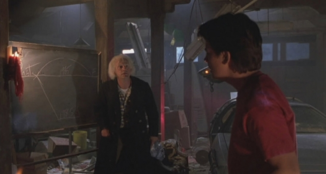
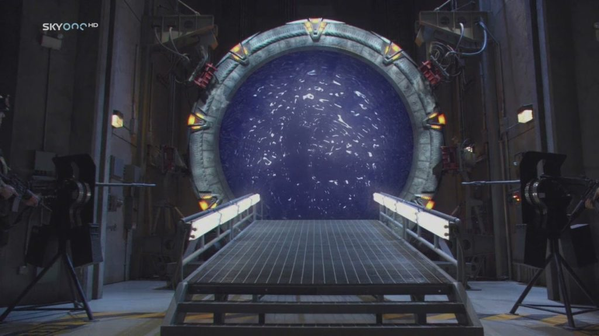
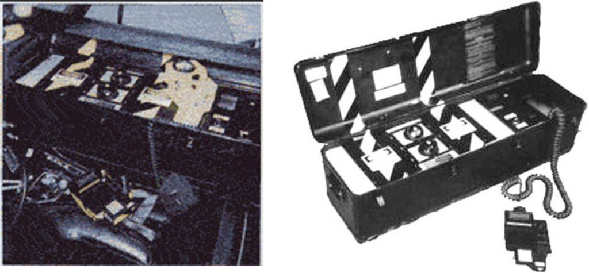
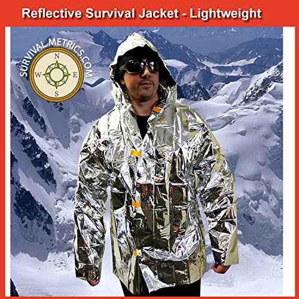
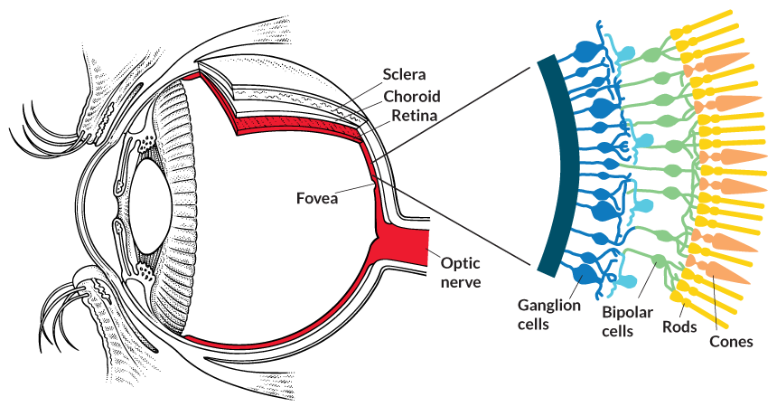

Let’s spend a short moment looking at an observed world-line switch. Here, a woman exits one world-line and appears in ours. She is wearing a thermal coat / blanket, of the type that looks like aluminum foil. The MWI can be traversed in many, many ways and methods. Let’s take a look at what was observed and discuss it based on what I know from my experiences within MAJestic…
Introduction
Here, let me spend s precious small amount of time to discuss very, very briefly something that I am well versed in. While, in other posts, I have mentioned some of my training, and some of what I know about the universe and our reality. I have also covered some things about our non-physical reality. Let’s talk about a specific event that was caught on camera and observed, via the internet, around the world.
But first, let’s lay out some ground rules.
- The MWI is real. There are alternative “world-lines” and other realities.
- Contrary to what impression that you might have from Hollywood, we do not live on a “world-line” we occupy a “bubble of reality”. Sorry “Doc Brown”…

- Once we are in that “bubble”, we can alter it and change it by our actions as well as by our thoughts. We have this ability through physical action, and thought.
- There are many different techniques for changing your reality. I know specifically of four…
These are;
- Simple changes to your reality. This can be accomplished by the power of intention or prayer. Not to mention the obvious changes by physical action.
- Large scale changes that require fixed machinery and devices to manifest. These are used to transport not only into a different reality, but also to a different geographical region. In this kind of alterations, time and geographic location can be changed.
- Large scale changes that can utilize portable devices to manifest. This can be in the form of large and heavy devices, and also in the form of much smaller device, depending on the technology of the user species.
- Changes to both the physical and non-physical realities by “piggy-backing” onto an entity with the inherent ability to conduct world-line travel via the MWI.
This is pretty "off the wall" stuff for casual reading, and not really something that you would find on most conspiracy websites. That's fine with me. This is the real deal. Read it or not. I just don't care.
Here we are going to discuss an observed MWI slide, or world-line switch (if you prefer) that took place in Russia on a highway. While I do not know of the specific method used, I personally tend to believe that it involved #2 above.
Travel by Intention
As I have just stated, there are four different ways (that I know of) to traverse the various realities that we can inhabit. The first and time-honored method is to make “slight” changes to our reality. We can do this by taking control of our physical world. This is the realm of (concentrated and directed) prayer. This is the world of “Intention“. By controlling your thoughts, you can control the direction of your life.
Travel by Portal
There are other techniques. These other techniques are more in-line with science fiction and Hollywood. In fact, my very first experience in MAJestic utilized such a device. Here we have a device that can open up a “space” or a “portal” that one can walk into. Once you enter that portal you can be transported to [1] other geographic locations, [2] other realities, and [3] other times.
This device uses the MWI, multiple world realities, to transport a person from one place to another. Imagine a device that can traverse the MWI, but one that is utilized towards moving things to other “world-lines” with little deviance. The resultant and only change might be geographic. Thus you could use this device to take you from New York City to Pluto, if you wanted.
Pretty cool. Sort of like the movie “Stargate SG1”.

The only thing is that when you travel you have to be very careful how you travel.
If you are not careful, you might end up in a different geographic region AND with a different history. The device alters everything. So you must be extremely careful on what you are doing. When you enter such a machine, you will need to be exactly calibrated to make sure that where you are going is where you will actually end up.
Which is sort of the reason why I, and the girls, had to fill out that detailed questionnaire at the ELF portal at NAMI. (More about that later on in a different post.)
Travel by Vehicle / Self
If you had the proper technology, you could miniaturize the equipment that you would use to conduct the MWI slide. You could put it in a vehicle and drive on the roads. Provided that you are not conducting great deviations, any MWI slides would be safe on a road.
Depending on the length of time that that road existed, often hundreds of years, you would be safe on it. The odds of hitting another car, even on a busy road would be small.
That is to say, there won’t be a tree, a building or some obstruction in your way. The land beside a road is often chaotic. You have trees growing and dying over time. You have fields appearing, and disappearing. You have buildings sprouting up and falling into decay. Not so with a road.
The chances would be that the road would be mostly clear… though there would always be a chance of an accident by other vehicles moving within the destination reality.

Travel by “Piggy Back”
Here is what I am most familiar with. While MAJestic has been very involved with a specific extraterrestrial benefactor (notably the infamous “greys” found so ubiquitously in popular culture), my involvement has been associated with them only tangentially.
I say this two times. I have been associated with them ONLY during [1] my training and [2] implantation “off-world”. After that, I have had no association with them.
Instead of working with them on various MAJestic projects, they had a different role for me. Their role, as far as I am concerned, was very limited. In it, they helped implant a device that originated from a different secondary species into my skull.
To repeat. My other implants; my extraterrestrial implants, originate from a different extraterrestrial species. They do not originate from the “grey” extraterrestrial species. The “grey” extraterrestrials only installed them within my skull.
This device has many functions, but fundamentally it connects me directly to a (censored) reality of that particular secondary species. It connects to them in specific ways, and offers two-way communication.
However there are many limitations from my point of view. For instance, certain experiences are beyond the ability of my mind to comprehend. there are also ‘closed off” and restricted features & functions. Not to mention, that they control my entire access to it. It is all at the pleasure of that species.
I have no control over any of it. Absolutely zero control.
This species is much older than those (numerous, FYI) that we have been working with. It is an invertebrate species with a very, very different understanding and (ability to sense) reality than we could ever conceive of.
Since I am so tethered, I can be considered to have some shared experiences and shared realities of the parent species. As they can migrate through the MWI, I can too participate in a limited way with their approval. As they can experience the various realities of “Heaven”, then I too can be made aware of their experiences to a very controlled level of participation.
The reader should not get too excited. It's like a watch dog who their entire life only ate dry dog food. One day, he is given the job of guarding the door to the kitchen. The cook decides to open the door to the kitchen, but the dog is forbidden to enter. However, he was permitted to smell the scents coming from a gourmet kitchen. It doesn't mean that it can go inside and eat it's fill. It just means that if the cooks and chefs felt there was a need or benefit they might toss a scrap or two to the watch dog.
My entanglement was exactly like that.
I performed a service that this extraterrestrial species wanted. In exchange, I was able to have some perceptions and minor experiences. Now, for some reason, as part of their prerogative I am permitted to relate certain perceptions to my fellow humans. I believe that this helps further their objectives. Though I cannot fully understand how.
Anyways, back to the sliding in and out of the MWI…
When you are “piggy backed” to a species that does this MWI slide naturally, you get to experience it as well. They think nothing of it. It is normal to them. It is something that they did ever since they were a little tiny harvested larva. But to us, who have never experienced this, it is strange and beyond our comprehension.
It took me some training to get used to it. Though the staff at the ELF facility at China Lake absolutely had no idea what it was like for me going through the various ‘exercises”. They just read through the printed out instructions, and I followed their guidelines and script.
They would say something like “depress the half circle”, and I would do it with my mind while sitting in the chair. An observer would see nothing. I would then confirm that I did it, and then they would read something else…
The Event
With all that introductory information out of the way, let’s talk about the “mystery in Russia”. Here we have a woman who just appeared out of “nowhere” in the middle of a busy road. Her appearance was captured on the dash cam of the trailing vehicle.
And…
I want to talk about it relative to what I know, and speculate on what is going on and why.
This example, this observed event, comes from the dash cam on a car as it moves along a highway in a semi-rural section of the country. The video claims that this was filmed in Russia, but given the environment could have been filmed anywhere.
Here is a very interesting teleportation event. It is unique because not only does she “pop” into reality, but there is apparently a “force bubble” that surrounds her that pushes a moving truck out of the way. She calmly walks off the road. She is observed wearing a thermal blanket and is otherwise a “normal” and “boring” person. Again, she is neither overly attractive, youthful or wearing colorful clothing. She is bland, and materializes in the middle of a flat boring section of the countryside.
In the labeled frames, one can see the truck being pushed out of the way to the left by some kind of force, or force bubble in frame 0013. In that frame, there is no woman at all. In the next frame 0014, the truck “rides” along the bubble and again, there is no woman at all.
Suddenly in frame 0015, the woman “pop’s” into reality.
She just calmly starts to walk to the side of the road, as if nothing has happened. Indeed, if it were me, I would be totally shaken and run to the side of the road. That is not what she does. She just calmly walks to the edge.
In frame 0019, she is seen walking off the road.
In frame 0021, you get a better view of her. Her hair is cut short and at neck level. Her face is indeterminate. She is wearing a thermal foil blanket or coat that goes to her knees. Her hands appear to be in her pockets. She seems to be wearing black leggings or socks and flat normal shoes. Not high heels. A close up of the foil coat is obvious in frames 0022, and 0023. In addition, the coat is made out of foil of some type.
I can’t help but remember a scene from the television show “Better call Saul” where Saul’s brother was afraid of light and wore the thermal blanket to protect him from radiation.
This specific event can be viewed on the following video. Please note that this video has other examples of fakes and hoaxes interspersed in it. Also the voice over and music track leaves much to be desired. Please turn off the audio and watch the video free of “Halloween style” or “B-grade movie” music.
https://www.youtube.com/watch?v=M_Hwlws9b1g&feature=youtu.be Watch from 4:08 to approximately 4:32.
An important note is that this exact type of coat; one made out of space blanket material (Mylar Thermal Blankets ) is not available anywhere, in any nation, in this world line. While there are those that are similar, none are an exact match for the one that this woman is wearing. The closest that I could find were;
The version on Amazon, shown below is a close match. However, there are no jackets that are thermal nylon material with a reflective surface that goes down to the knees, comes in a woman’s size, has a side slit, and does NOT come with a hood. This woman’s jacket is completely unique.

About the Jacket
Why would someone need to wear such a jacket?
Well there are many reasons. First off, let me posit to the reader that there are many ways and different kinds of technologies that one can use to do things. All the reverse engineering efforts of the 1950’s to today clearly indicate a great diverse spectrum of technology and ways to accomplish similar tasks. Different species use different technologies, at different levels of advancement. Different variations of a species also have different kinds and levels of technologies as well.
There is a saying in China; "There are many ways to get to Beijing.". What it means is that you can have different methods and ways to achieve the same goal. If you have a lot of money, and you need to get there quickly, then a private jet is possible. If you have money, and need to get there in a day, an airline is a possibility. Alternatively you can take a high-speed train, a train, a bus, a shuttle, a car rental, a ride-share, or even a donkey cart. It all depends on your knowledge, and your resources at the time.
In a like way, depending on the technology to slide through the MWI, you might need protection.
According to John Tutor, he claimed that if you crossed the MWI using the technology at his disposal, there would be a short and brief exposure to some extreme radiation. If this woman is using a similar technology, then she would need a coat or protective attire to reflect any burst of radiation. Excessive radiation is very bad for you.
Now, in all the cases of the technology that I have used, not one of them experienced a burst of radiation of any type that I am aware of. To elaborate;
- When you use prayer or intention, the effects as subtle and manifest over swaths of time.
- When you enter a fixed portal, it is as if you are just walking into nothing. Though there is a feeling as if you were walking though a waterfall. And for a few seconds later you would feel soaking wet.
- When you “piggy back” there is no effect. Not even a shimmer. Things just look slightly different.
Why on a road?
While my personal experience NEVER required a road, I am aware that there are technologies that are used to travel along the time vector that DOES require a road. Anyone who wishes to use the MWI to travel through time needs to have exact coordinates. Both spatially and in regards to the person traveling.
Roads last for decades, even centuries.
For instance, let’s suppose you wanted to do some kind of time travel in the Boston area. You could travel on the interstate I-90. This means that you could go back in time to when I-90 was first made. Possibly that would take you to 1956. Yet, even before the highway came into existence, it was a road, and an early dirt road as far back as 1900.
How long do you, the reader, think that I-90 will exist for? Another five years, 20 years, maybe 100 years? If you consider that it might last until the year 2100, then a time traveler would have a 200 year wide “window” from which to explore and take care of their business with.
Now, all this is very interesting…
But, aside from just a few very, very sanitized instances, my own time travel events were limited. There just wasn’t any need for them in my role. I was doing other things in regards to human sentience and social observation. So, it is beyond my understanding WHY anyone would NEED to travel through time. Isn’t this reality good enough for ya?
Anyways, I have various examples of cars disappearing and reappearing on roads. I have examples of cars appearing out of the blue in cross roads and getting into accidents. I have other examples of people appearing out of the blue on the side of the road and getting hit. I will post these examples later.
Given the large number of examples, we can conclude the following…
- There are numerous people / civilizations / species / societies that utilize roads to egress from a MWI event.
- The need to travel through time as a destination vector is deemed (by some) to be important.
- Accidents can and do happen when this technology is utilized.
Her Dress
If I were to travel as a time traveler, I would wear the clothes of my destination era. If I were to visit medieval England, then I must dress as a wealthy merchant, or commoner. Which ever venue would attract the least amount of notoriety. If I were to travel back to 1960, what would I dress as?
- A beatnick
- A hip teenager
- A working man
- A rich businessman
- A police man
The answer is that I would dress as unassuming as possible. I would dress as common and plain as possible. I would dress as an “average Joe”. That’s what I would disguise myself as.
But…
But, what if you don’t have that kind of control in your time vector? What if the technology and the dispatch and arrival coordinates are not so precise? What are you going to do then? What if there is a wide variance in dates of arrival. What if you could enter a given reality (“world line”) anywhere from 1930 to 2010? How would you dress?
Think about it.
If you were going into the past, you most certainly wouldn’t have any tattoos, or large piercings. Your hair would be cut in a conventional style. What you carried on with you would be plain and unassuming. If you wore classes or spectacles, you might be wearing contacts or have Lasik eye surgery.
If you were a woman, you might dress in some clothes that hasn’t changed much in that stretch of time. You might dress as a Mennonite (provided that yo could speak their dialect and know their culture), or you could dress in something more conventional. You could dress as a nun in a Christian order. There, the clothes are pretty standardized and hasn’t change much in decades.
If you look closely at the woman’s shoes, and sock, and hair style, it looks EXACTLY like the image that she is trying to portray.
MWI and not an Invisible vehicle?
One of the arguments is that perhaps this woman is not utilizing MWI or some elements of “time travel”. Instead, the argument goes, she is egressing from an invisible vehicle.
This is certainly possible, as it seems to be common knowledge that many of our extraterrestrial friends can make themselves and their vehicles invisible. It has to do with the light cones that are within our eyes. By manipulating the radiation that surrounds something you can trick the light cones from not seeing anything. Since different species have different biology, the eyes cones can be species determinant.

A fun example of this is in the Star Trek movie titled “Star Trek IV – The Voyage Home”. In the movie, the character utilize a captured Klingon space vessel that has “cloaking” ability. The characters use this ability to hide the spaceship in plain sight int he middle of a park in San Francisco. Then they fly away and materializes directly above a whaling vessel.
I would argue that a “cloaked” vehicle that is “invisible” or “transparent” still has substance. You might not be able to see it, but you still can run into it. If the woman was egressing from an invisible vehicle, then that truck would have smashed into it.
This reminds me of an “X files” show where a genie appears. The episode is “Je Souhaite”. She offers everyone three wishes. One of the people who obtained the wishes wanted to be invisible. So he gets to be invisible, and promptly gets run over by a truck. You can watch the video HERE on the internet.
A lot happens: A guy (Anson Stokes) finds a woman rolled up in a rug in a storage locker. His boss instantly loses his mouth. Anson then gets a boat in his driveway and *then* is found dead, invisible, having been hit by a truck. Cue a wonderful scene of Scully dusting an invisible corpse with lycopodium powder while grinning like an idiot.
No, I do not think that she is egressing from an invisible vehicle.
Another example.
This is a video posted in China during the middle of the coronavirus outbreak. Video is apparently taken sometime in November prior to the first signs of the virus outbreak in December.
It shows a man entering the observed physical reality. Once he arrives he immediately “books it out” onto the sidewalk and merges in with the crowd. He appears to be Caucasian in a city that is 99.9% Asian.
What I am seeing (as far as the transport mechanism) is exactly what I was exposed to when I was in the Navy at NAS NASC Pensacola Florida.
▶ Media file: appearing-man-in-wuhan-China-november-2020-2-11-2020-11-12-02-AM.mp4
The video posits many questions. And, it also implies some even worrisome situations.
Summary
There are multiple realities. There are individual bubbles in time that the realities can manifest. Individuals from one reality can enter into another reality by “sliding into it. This is accomplished in many ways.
We can occasionally see people crossing into our reality. Just as we can witness people egressing from our reality.
This lady has been filmed by a vehicle dash cam in Russia entering our reality through MWI egress via a road. Her attire is suggestive of time travel, and a “crude” MWI technology. As such, the destination coordinates can vary (as inferred from her clothing), and there might be some radiation leakage during egress (from the protective coat that she wears).
Take Aways
- The MWI exists. It is not some theory that needs to be debunked or “proven”.
- Travel within the MWI is possible using different techniques.
- MAJestic is aware of this technology and has been using it for decades.
- Time travel is a time vector variation of MWI switching.
- While I doubt the usefulness of time travel, apparently others consider it important.
- My operations used MWI slides at the behest of my extraterrestrial benefactors. My experiences were quite boring and would lull the reader into a peaceful slumber.
FAQ
Q: Is the lady in the foil jacket a time traveler?
A: I do not know for certain. However, I have my suspicions. The need to conduct a MWI slide while on a major road is certainly suggestive of this. Why she would want to do it, in the first place, however is a mystery to me.
Q: Have you ever used a portable MWI event slide mechanism?
A: No. I have read stories of numerous individuals who have claimed to have a portable device that does this. John Titor is one such individual. There is also the fellow who ended up carrying a mix tape of the Beatles back with him.
Q: Why did you have MWI-slide ability?
A: I personally think that the ability that I had to conduct MWI-slides was an accidental “side effect” of being implanted and entangled to an extraterrestrial species with this ability. They never sent me on any interesting missions or stuff like that. They tended to constantly adjust the functioning of our reality relative to my personal experiences. Which was my purpose in MAJestic. I was a “Dimensional Anchor”. It helped the development of human sentience be realized.
Q: Can you conduct autonomous MWI slides and “world line” travel on your own?
A: No. I have no ability to do anything like that. Other than what ability that I have to control my intentions and dreams. For the most part, I gave away part of myself to take on this position. This species controls me and my abilities to a great deal of control. I conduct their wishes without thought.
MAJestic Related Posts – Training
These are posts and articles that revolve around how I was recruited for MAJestic and my training. Also discussed is the nature of secret programs. I really do not know why the organization was kept so secret. It really wasn’t because of any kind of military concern, and the technologies were way too involved for any kind of information transfer. The only conclusion that I can come to is that we were obligated to maintain secrecy at the behalf of our extraterrestrial benefactors.


MAJestic Related Posts – Our Universe
These particular posts are concerned about the universe that we are all part of. Being entangled as I was, and involved in the crazy things that I was, I was given some insight. This insight wasn’t anything super special. Rather it offered me perception along with advantage. Here, I try to impart some of that knowledge through discussion.
Enjoy.


MAJestic Related Posts – World-Line Travel
These posts are related to “reality slides”. Other more common terms are “world-line travel”, or the MWI. What people fail to grasp is that when a person has the ability to slide into a different reality (pass into a different world-line), they are able to “touch” Heaven to some extent. Here are posts that cover this topic.


John Titor Related Posts
Another person, collectively known by the identity of “John Titor” claimed to utilize world-line (MWI egress) travel to collect artifacts from the past. He is an interesting subject to discuss. Here we have multiple posts in this regard.
They are;